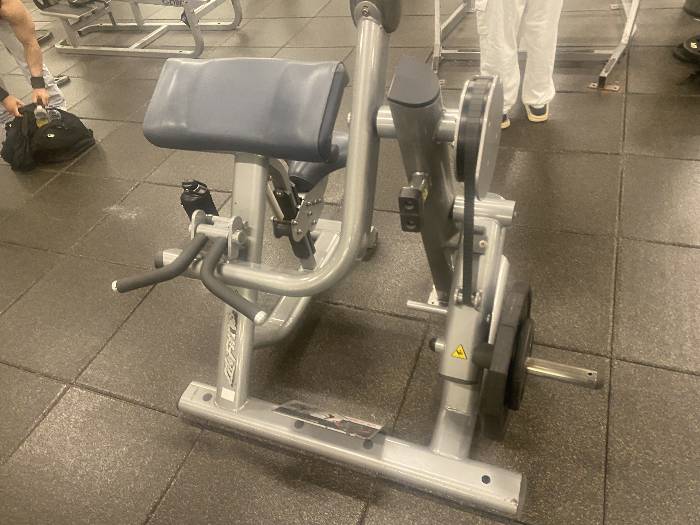
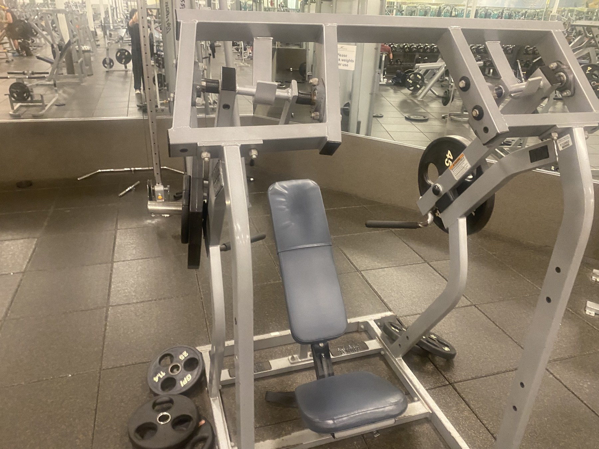
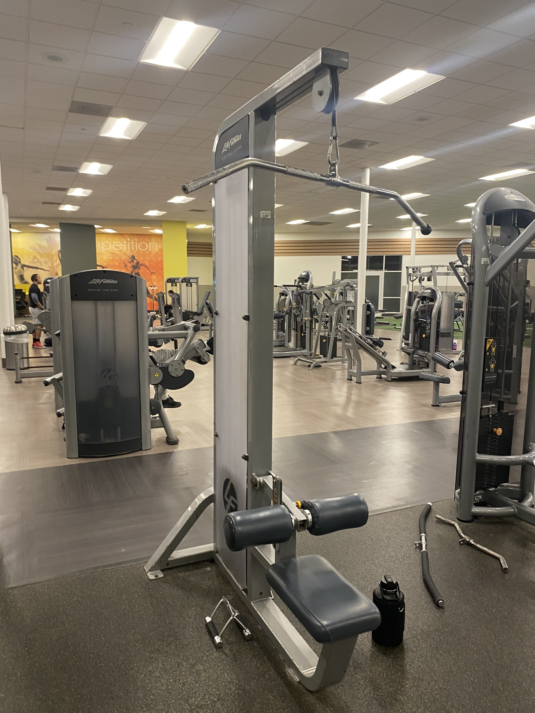
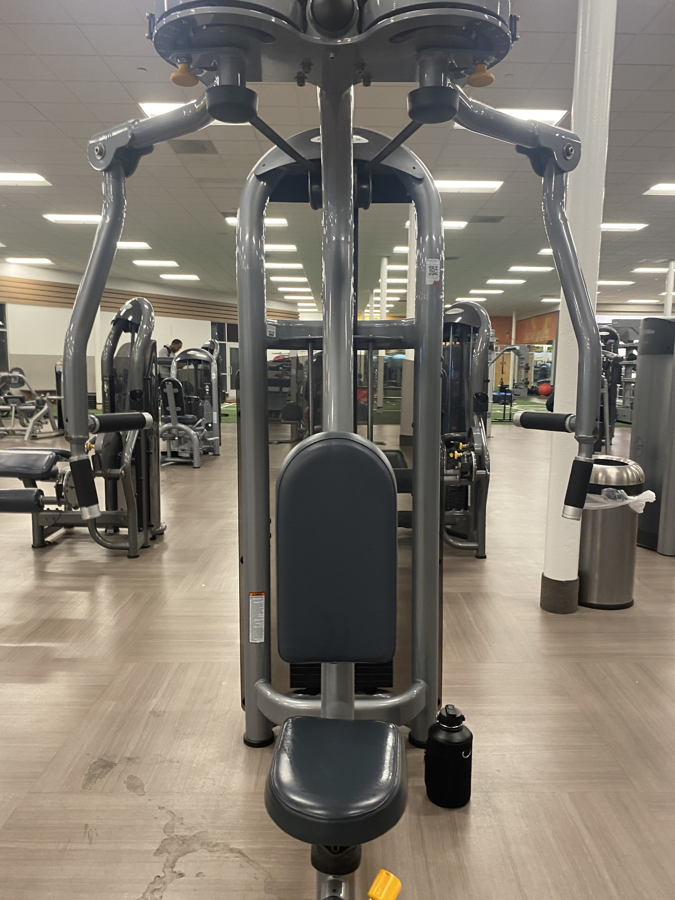

Visual Essay
A Day In An Upper Body Routine
This visual essay follows one upper-body day from the moment I mix pre-workout to the snack that ends the lift.
On upper day I usually walk in with a rough plan already set: get energized, start with a press, move through the main upper-body machines, and finish with something small from the juice bar. That ordinary routine is exactly why this works as a visual essay. It shows how a bodybuilding session develops over time instead of looking like a random list of equipment.
My current training split follows an upper / lower / rest pattern. I like it because it is efficient and realistic for my schedule. When time is limited, I still get to train the full body often enough, recover between sessions, and keep progress moving without trying to live in the gym. For non-lifters, that is one of the first things worth understanding about a good routine: it should fit your life closely enough that you can repeat it. A routine is not good because it looks intense on paper. It is good when it gives each major area enough attention and leaves room for recovery.
This page fits the site by showing how the equipment, habits, and gym spaces work together in one actual routine. The reviews talk about specific tools, the pictorial catalogs the gym world, and the map organizes that world in space. The visual essay shows how those pieces come together in one upper-body day.
Starting The Routine
Before the first lift, there is always a small ritual that makes the gym feel like the gym. On this day that ritual started with Gorilla Mode Watermelon. Pre-workout is not magic, and it does not replace sleep, food, or consistency, but it does mark the beginning of the session. For me it works like a switch into workout mode.

My first real station on this day is flat bench. A good starting lift should be important, repeatable, and worth doing while you are freshest, and flat bench works well for that. It is a straightforward press that lets me check setup, control, and confidence right away. Before the first working set, I pay attention to hand placement, shoulder position, breathing, and whether the bar path feels even. I want the session to begin with form first, not ego first. That is also why progressive overload matters here.

Adjusting Through The Workout
After flat bench, upper day shifts from opening strength into building volume. This is where the session becomes less about one headline lift and more about covering the upper body intelligently. My next sequence is preacher curl, shoulder press, lat pulldown, chest fly, and cable work. That order is not sacred, but each exercise has a role.

The preacher curl machine is one of the cleanest stations for direct arm work. It strips away momentum and makes the biceps do the job without turning every rep into a swing. For a novice lifter, that is a useful reminder that a good machine is not "easy"; it is just more honest about what muscle is supposed to be working.

The gym was busier than I expected, which changed the middle of the session. I originally thought about a more open overhead press setup, but with more traffic around the room I skipped that and used the shoulder press machine instead. That choice kept the workout moving. It is a small example of how a routine should bend without breaking when the gym gets crowded.

From there the workout moves into the lat pulldown. After pressing and curling, pulling work balances the session and keeps upper day from turning into chest-only training. It also teaches another useful beginner lesson: different exercises ask for different kinds of attention. Here I think more about grip width, torso angle, and whether I am pulling through the back rather than just yanking with the arms. Readers who want a basic exercise reference can look at this lat pulldown form guide.

By the time I reach the chest fly machine, the heavy pressing work is already done, so the goal changes. I am not trying to show strength here. I am trying to get clean chest volume with a controlled stretch and squeeze. That shift matters because a full upper routine should mix compound work with more focused machine work instead of treating every exercise the same.

Cable work finishes the chest portion of the day. At this point I am less concerned with weight and more concerned with tension, control, and ending the lift without rushing. That is the main side note running through the whole session: even when the gym is busier than expected, the point is not to force the perfect script. It is to keep the purpose of the workout intact.
Closing And Recovery
The ending I wanted was simple: stop at the juice bar, grab something small, and let that be the clean finish to upper day. Endings matter because they tie the workout back to recovery. Nutrition does not need to be treated like a magic trick, but getting enough protein through the day does support muscle gain and recovery. A beginner-friendly source on that is this protein intake guide from Healthline.

This time the juice bar was open, and that changed the ending in a good way. I picked up a PB&J sandwich to finish the lift. It is not a dramatic bodybuilding meal, but that is part of the point. A practical post-workout choice fits the same logic as the routine itself: do something consistent, simple, and easy to repeat.
A successful upper day is not one where every detail goes perfectly. It is one where the structure is good enough that the day still works when the room is crowded, the order shifts, and the ending still leaves you ready to come back.
Coda: What Upper Day Shows
This upper-body routine should leave readers with a clear picture of what an upper day actually is. It is a sequence of decisions about exercise order, energy, setup, substitutions, and recovery. The split works for me because it is efficient and repeatable. The first lift matters because it uses the freshest attention. The smaller adjustments matter because real gym sessions are never as neat as a typed list.
This day ended better than expected: the gym was crowded, the order changed, and I simplified one press choice, but the routine still held together and even ended with a PB&J from the juice bar. That is probably the most useful lesson for a novice lifter: perfection is not the goal. Repeatability is.